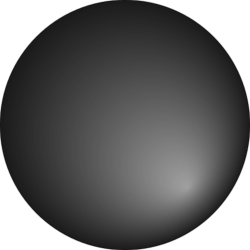
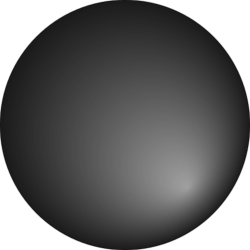

{{ 'RULES_OF_TICTACTOE' | translate }}
| {{ 'RULES_SLIDE1' | translate }} |

|
| {{ 'RULES_SLIDE2' | translate }} |

|
Turn: {{ game.getTurn() }}
White Score: {{ game.getWhiteScore() }}
Black Score: {{ game.getBlackScore() }}
 

Winner: {{ game.getWinner() }}
White Score: {{ game.getFinalWhiteScore() }}
Black Score: {{ game.getFinalBlackScore() }}